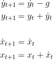

This is my first completely unguided machine learning project - defending Earth with neuroevolution.
Here, a neural network learns to solve a fire-control problem: How to hit a moving target with projectile motion. Like many beginner ML problems, of course this could be solved analytically. I think it makes for a neat project though.
First, the game environment was created. This is:
- The physics that affect projectiles
- Building the gun and how it fires projectiles with a fixed speed at some angle.
- Logic to determine if a projectie hits a target.
Projectiles follow frictionless projectile motion:

Next, the neural network is given control of the gun, and fed information from the game enviroment. The neural network is dense (fully-connected) and has:
- 4 Inputs: Target X-position, Target Y-Position, Target Speed, and a reload countdown.
- A single hidden layer with 8 neurons.
- 2 Outputs: Gun-angle, and Fire.
A population of guns is trialled one-by-one. Each gun is controlled by a (randomly initialised) neural network. Performance is measured by how many UFOs are destroyed and how quickly. Near misses are also rewarded to encourage faster training during early generations.
If a gun lets some UFOs through, it’s killed-off and the next one takes its place. Once all the guns have been trialled, a new generation is created. Better-performing guns are more likely to pass their genetics (NN) on to the next generation. Small mutations may occur between generations.
There are a few options for the user:
- train mode: perform neuro-evolution on the guns
- best so far: display the best-performing gun that has been trained yet.
- pretrained model: deploy a pretrained, well-performing neural network.
- manual: take control of the gun yourself!
References
- Toy Neural Network - The Coding Train